Кыргызские национальные блюда и напитки
Кыргызстан — это страна, где на перепутье Великого Шелкового Пути соединилась традиционная кочевая культура и оседлая. А потому кыргызская национальная кухня является удивительным сочетанием блюд самых разных центральноазиатских народностей: кыргызов, узбеков, уйгуров и дунган. Отличительной чертой кыргызских блюд является то, что все они готовятся исключительно из свежих продуктов и редко запасаются впрок, а рецепты их приготовления хоть и кажутся совсем простыми, но на поверку содержат в себе множество тонкостей, довольно непростых для освоения.
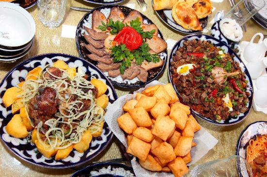Также стоит заметить, что практически у всех блюд кыргызской кухни основным ингредиентом является мясо: баранина, говядина, конина и мясо яка. Связанно это с уходящими глубоко в древность животноводческими традициями кочевых кыргызов. Также широко используются молочные продукты. В южных, земледельческих областях страны помимо мяса в блюда добавляется большое количество свежих овощей и приправ.
Блюда
Бешбармак
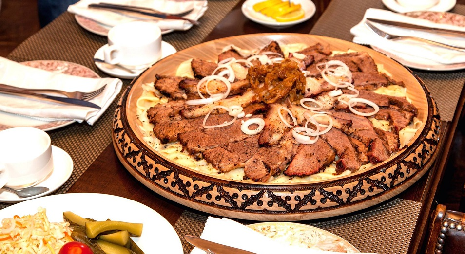Бешбармак — это одно из самых любимых и традиционных кыргызских блюд, имеющее тюркские корни. Бешбармак представляет из себя рубленное мясо, которое подается с лапшой, луком и крепким мясным бульоном. Примечательно что традиционно бешбармак естся руками. Именно с этим и связанно название блюда: в переводе с кыргызского «бешбармак» означает «пять пальцев». Распространен бешбармак главным образом на севере Кыргызстана, в Чуйской, Таласской и Нарынской областях. Примечательно что бешбармак без лапши называется «нарын».
Плов
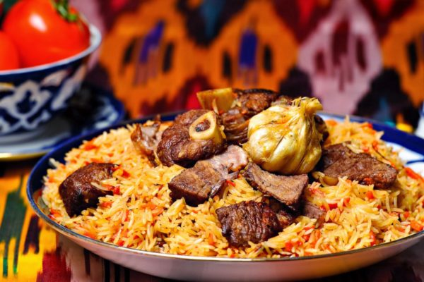Плов — это традиционное средне-азиатское блюдо, родом из Ферганской долины и распространенное в южном Кыргызстане. Основой блюда являются рис, морковь и мясо, сначала обжаренные, а затем сваренные. Каноничного рецепта приготовления плова не существует, и практически в каждом селе есть свой рецепт приготовления. Могут меняться варианты сорта мяса, риса и моркови, могут добавляться дополнительные ингридиенты, такие как чеснок, изюм, курага, орехи и т. д. Однако наиболее вкусными считается плов из узгенского риса, который готовится в городах Узген и Ош.
Лагман
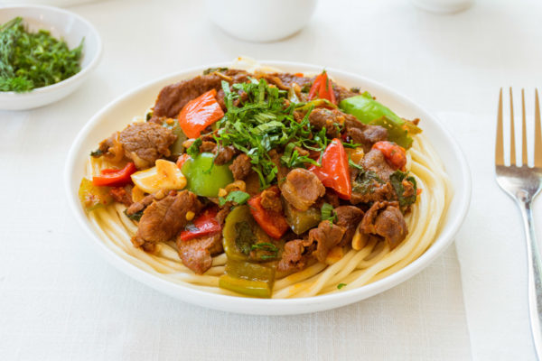Лагман представляет из себя отварную лапшу, приправленную обжаренными, а затем потушенными овощами и мясом. Лагман имеет дунганские корни и издревле является одним из любимейших блюд национальной кухни. Как и плов, лагман имеет множество разновидностей: жаренный босо-лагман, подаваемый раздельно гюрю-лагман и т. д. Также могут довольно сильно отличаться ингридиенты, в зависимости от сезона или места приготовления. Примечательна и лапша для лагмана, которая растягивается вручную. В Кыргызстане лагман распространен повсеместно.
Шорпо
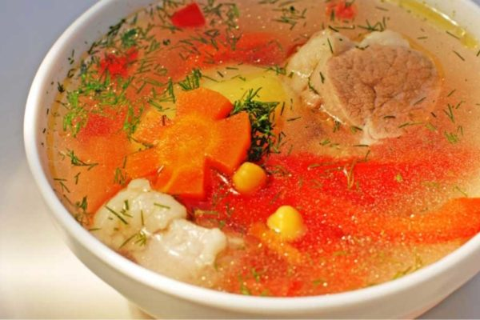Шорпо — это крепкий и жирный мясной бульон, который может содержать в себе морковь, картофель, лапшу и зелень. Шорпо повсеместно распространено на территории Кыргызстана, однако рецепт его приготовления может весьма сильно отличаться в зависимости от места. Так, например, в северных областях Кыргызстана в шорпо не добавляется практически никаких приправ и весь акцент делается на длительной варке мясного бульона. В южной же части страны, напротив, в шорпо добавляется большое количество ароматных приправ и ингридиентов.
Манты
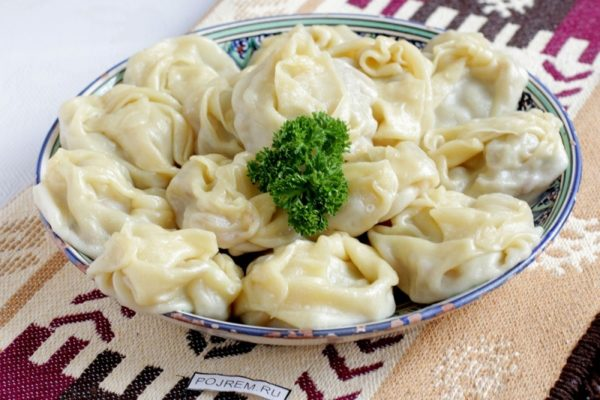Манты представляют из себя начиненное мясом тесто, приготавливаемое на пару. Это традиционное средне-азиатское блюдо, имеющее китайские корни. В Кыргызстане наиболее распространенной начинкой для мант является мелко-рубленная баранина или говядина с луком. Часто к мясу добавляется еще и тыква или джусай. В качестве к приправы к мантам употребляют уксус. Блюдо распространено повсеместно по всему Кыргызстану.
Самса
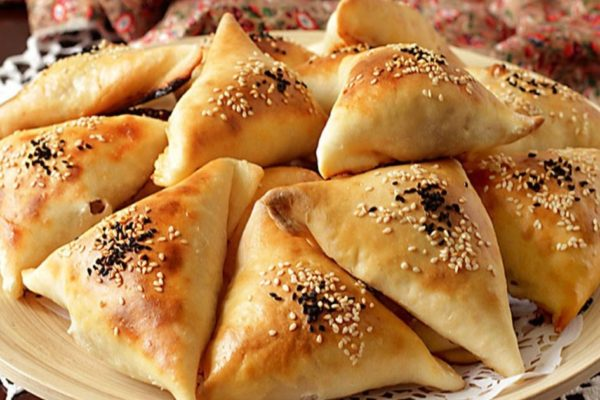Самса — это запеченное тесто, часто слоеное, с разнообразной начинкой, в первую очередь мясной. Самса является одним из самых любимых кыргызских блюд. В городах и крупных селах самсы являются популярным вариантом уличной еды. Традиционно самса выпекается в тандыре — глиняной печи, однако в городах самсы выпекаются и в обычных духовках и имеют треугольную форму. Часто помимо мяса в качестве начинки добавляются тыква и картофель. Самыми вкусными в Кыргызстане считаются ошские тандырные самсы.
Куурдак
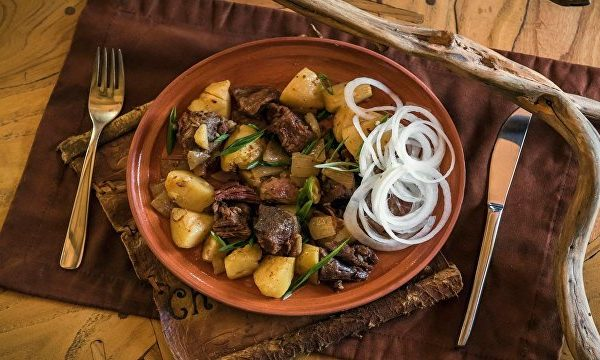Куурдак представляет из себя жаренное мясо с картофелем, луком и большим количеством специй. Встречается практически повсеместно.
Дымдама
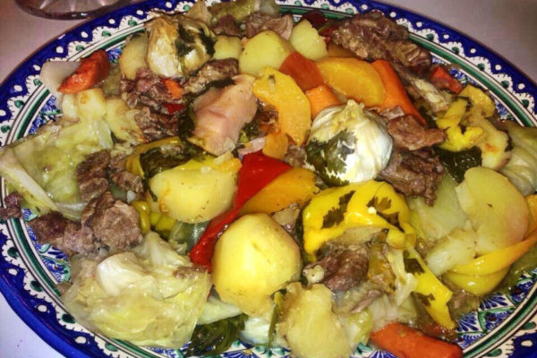По сути, дымдама — это тушеные овощи в казане с добавлением мяса. В число овощей используемых для дымдамы входят капуста, картофель, морковь, баклажан, перец, лук, сельдерей и многие другие.
Курут
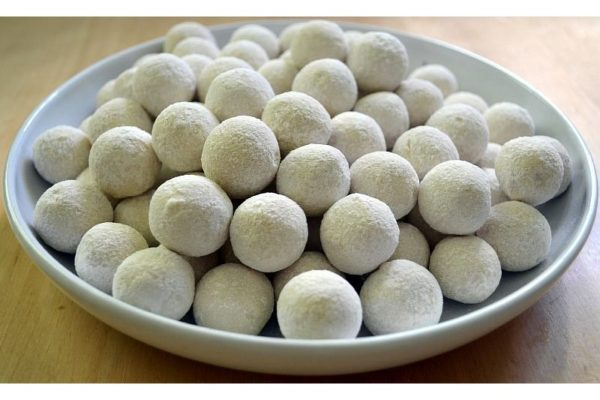это кисломолочный продукт, в виде небольших сушеных шариков, своеобразный средне-азиатский сыр. История курута уходит глубоко в кочевую древность тюркских народов. Изготовление курутов было одним из немногих способов запастись провизией на долгий срок. Куруты же примечательны именно тем, что могут храниться буквально годами. На вкус курут соленый и кисловатый. Широко распространнен на всей территории Кыргызстана.
Напитки
Максым, жарма
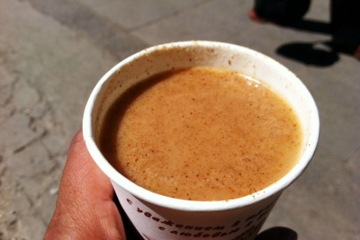Максым — это кыргызский национальный напиток из зерновых: ячменя, проса, пшеницы и кукурузы. Имеет кисловатый вкус.
Вам может быть интересно:
Летний отдых на Иссык-Куле
Безопасность в горах
Достопримечатель-ности Кыргызстана
Транспорт